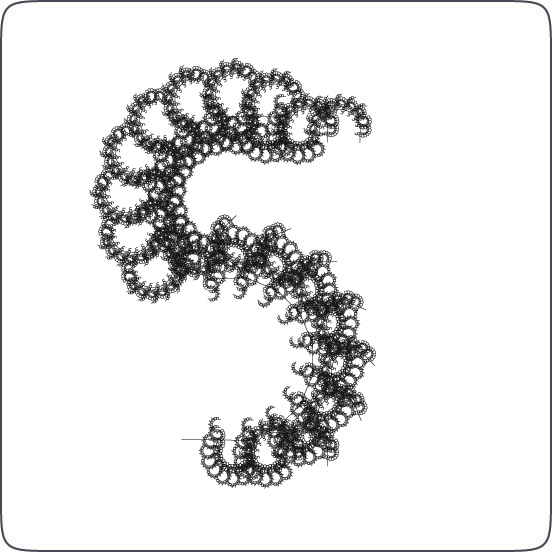

Frederik has rewritten his Dryad-typeface as a NodeBox script (the original interactive version was in Processing, you can play with it at http://igor.grafitron.com/dryade/).

The letter S
Dryad is a typeface that grows words: a single character is made up of many of the next character in the word, and that character is made up of many of the next character, and so on.
This principle is called recursion, defining things in terms of themselves. Recursion occurs in nature as well as in programming, for example, a tree could be described as a big branch which has smaller branches... a definition which is true for any part of the tree, from the stem to the smaller twigs.
Dryad’s algorithm is a so-called Lindenmayer-system (or L-system), a recursive system of rules and symbols used in biology and artificial life to describe plant growth and development.
I've included an animation of the letter Z growing, very cool!
Created by Frederik De Bleser